On the Applications of Commutator Contours
I accidentally noticed that some contours with special properties, called commutator contours, appear as solutions of two rather distinct problems: picture-hanging puzzles and integral representations of special functions. In this post, we will unify these two stories.
Commutator Contours
Camille Jordan was the first to introduce the concept of the commutator contour in his legendary Cours d’Analyse [1] in 1887, which unfortunately was never translated into English. As he introduced it first, I will call it Jordan-Pochhammer contour, rather than just the Pochhammer contour as most often referenced by formal sources. As described in the Wikipedia article on Jordan-Pochhammer contour [2]:
A Pochhammer contour winds clockwise around one point, then clockwise around another point, then counterclockwise around the first point, then counterclockwise around the second. … Its winding number about any point is 0 despite the fact that within the doubly punctured plane it cannot be shrunk to a single point.
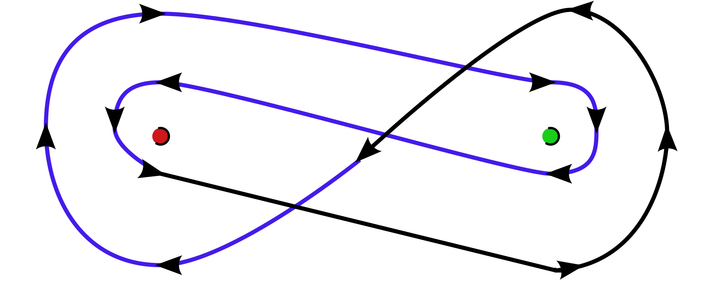
Net zero winding can be easily checked by illustration of the contour cycle:
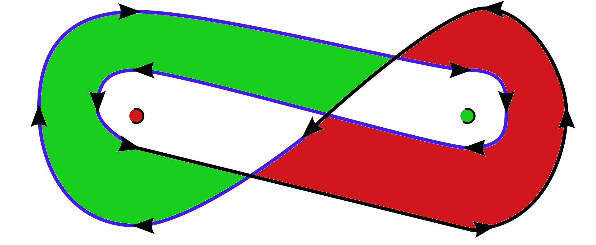
Jordan-Pochhammer contour is an example of commutator contour for two points. The question is: can such a contour be constructed given n points, and how? The answer is yes, and the paper on picture-hanging puzzles [3] offers two constructions, exponential and polynomial.
We define symbols (, , …, , ) with being winding the curve around point clockwise and for winding it counterclockwise. The algebra rules are simple: symbol’s order can’t change, and the product reduces to
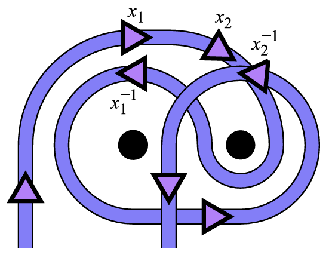
In the exponential construction, a 3-point commutator curve can be built starting with 2-point commutator being extended to 3 points:
This construction is called exponential as commutator is longer by a factor of 2 for any additional point, with additional two entries for and . With every step we get
It would be convenient to find a way to construct a shorter variant if possible, and that is the polynomial construction defined by Chris Lusby Taylor [3], [4]. For a single point, we define , for two points we define . Now for some specific problem with points the solution is obtained by recursion
Using polynomial construction for 3 points doesn’t result in any gain compared to the exponential version, but for 4 points, polynomial commutator contains 16 symbols compared to 22 in the exponential version.
Length of n-point commutator resulting from the polynomial construction is (hence the name) which is considerably shorter compared to the exponential version with size .
Picture-Hanging Puzzles
As mentioned, the corresponding commutator contour is the solution of the picture-hanging problem: “Hang a picture on n nails so that removing any one nail causes the picture to fall.”
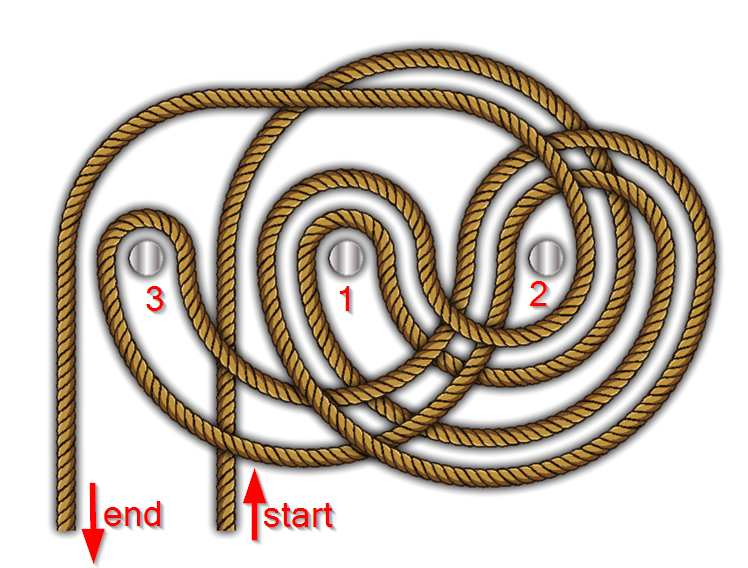
A commutator contour is the solution of the problem because removing some nail algebraically corresponds to removing symbols & from the commutator expression, after which some pairs come “in direct contact” and by step by step multiplication, the entire expression reduces to , which is interpreted as “the knot is no more.” The property is a straightforward consequence of the construction described before.
At this point it is interesting to note that -point solutions are not unique. Commutators can be defined in different ways by choosing different starting symbols pair. In the 2-point example, we constructed the commutator with , but using the commutator instead is equally valid. This way we get the second solution. Depending on the literature, some use the first, some the second. Effects are similar as they would be for any adequate n-point commutator contour.
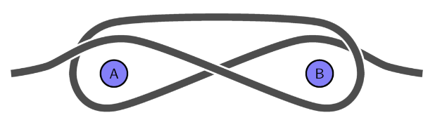
Integral Representations of Special Functions
As mentioned, Camille Jordan was the first to introduce the concept of the commutator contour. He needed it as a tool for constructing integral representations of multivalued complex functions. As seen from the Appendix, he used a similar formalism with expressions such as My first contact with the topic was when I was intrigued by the contour in the NIST Handbook of Mathematical Functions [5] used in the integral representation of the Kummer hypergeometric function.
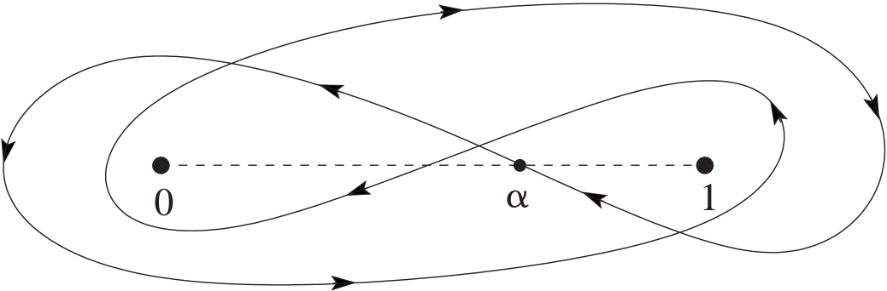
The handbook also presents the Jordan-Pochhammer contour used in integral representation of the Beta function. Leo Pochhammer visualized it for the first time in “Zur Theorie der Euler’schen Integrale” [6] in 1890 in a slightly different manner, as shown in the Appendix.
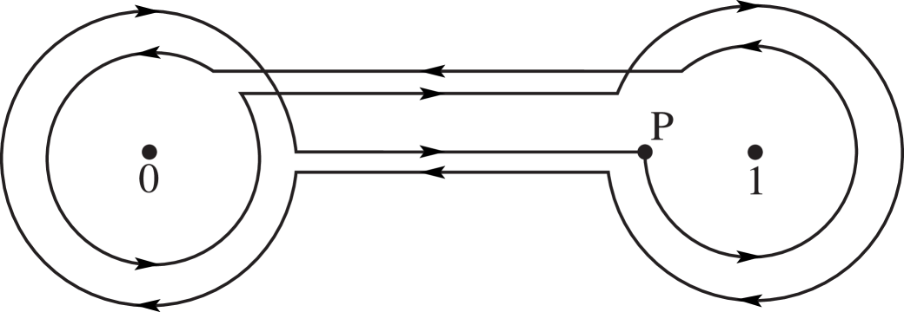
TODO: Here I will skip the theory of integral representations, which I would very much like to cover for its elegance and beauty: why commutator contour, topology of Riemann surfaces, traveling the surface, and accumulating the phase, etc.
The technique is also used in integral representations of Legendre functions. With varying numbers of branch points and their configuration, there are quite a few cases to cover. One example from Courant-Hilbert Methods of Mathematical Physics, Vol. 1 [8], with the full page shown in the Appendix:
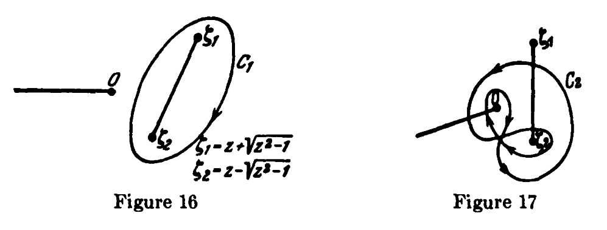
TODO: Identify commutator contours for integral representations of multivalued functions with three or more branch points. It would be nice to utilize polynomial construction and check different configurations of branch points and contours.
A year ago, I accidentally discovered a small gem - a modest scan of a page from Schrödinger’s notebook containing the first record of his famous equation. The notebook was created during his visit to Villa Herwig-Arosa at Christmas 1925. Along with the equation, this exact part of the page contains a two branch points integration commutator contour, possibly even a try to draw a complementary contour as there are two of them with slight experimentation on its construction.
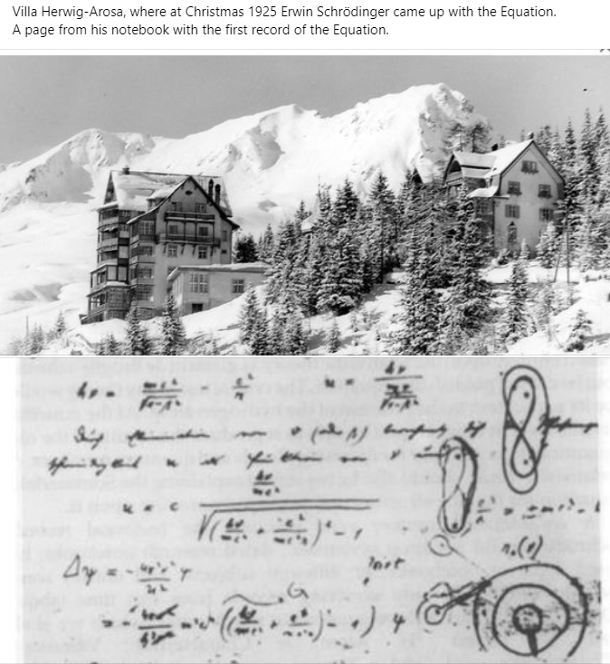
Conclusion
I would be interested in obtaining more examples of application of commutator contours, such as integral representations with three or more branch points, or in totally different domains. Additionally, it would be interesting to know if there has been any generalized treatise to date.
Acknowledgements
I would like to express my sincere gratitude to all those who influenced the creation of the post. To the colleague physicist Goran Duplančić for introducing me to the picture-hanging problem. To my dear colleague Matej Dobrovodski for buying and flying the NIST book from the UK as none of us knew the book is about the size of a small pig. Last but not least, to Ivica Smolić for useful discussion and for motivating me to produce some output on this modest observation.
Appendix
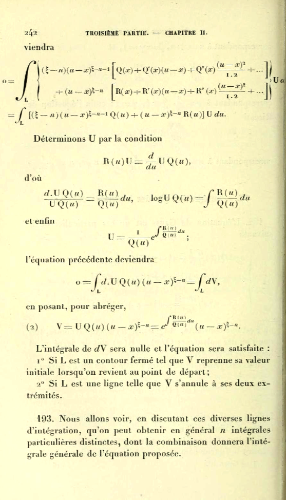
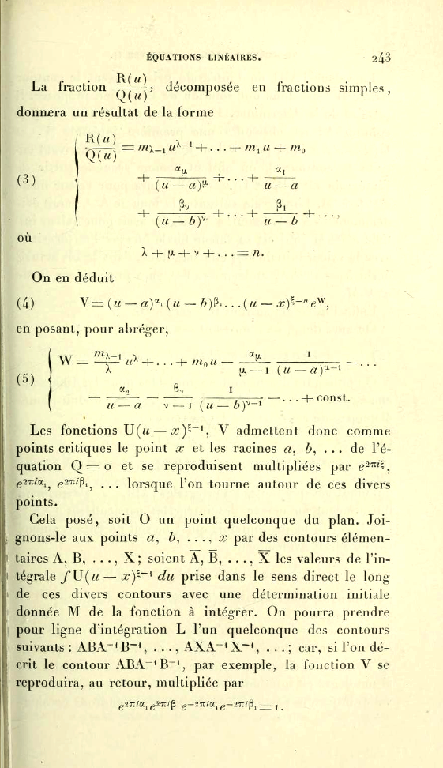
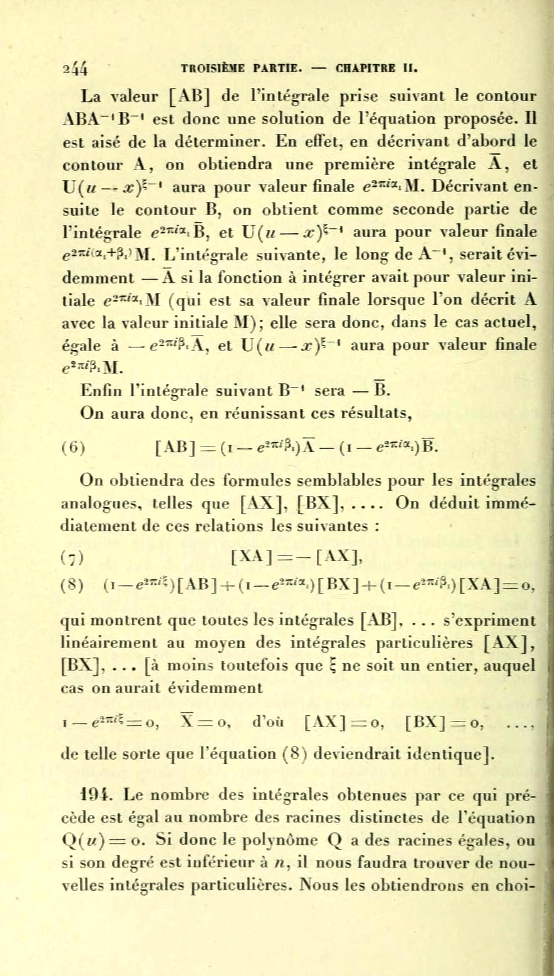
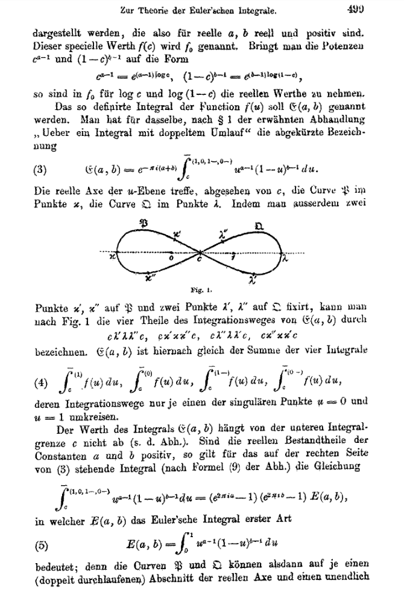
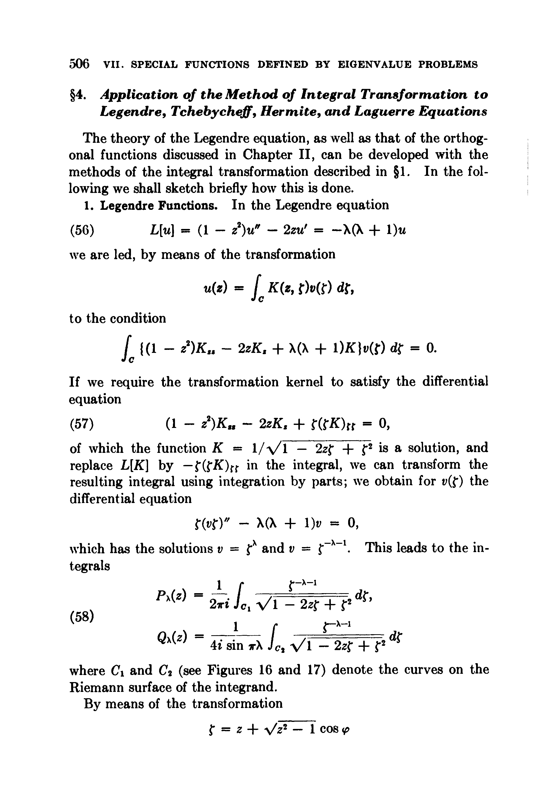
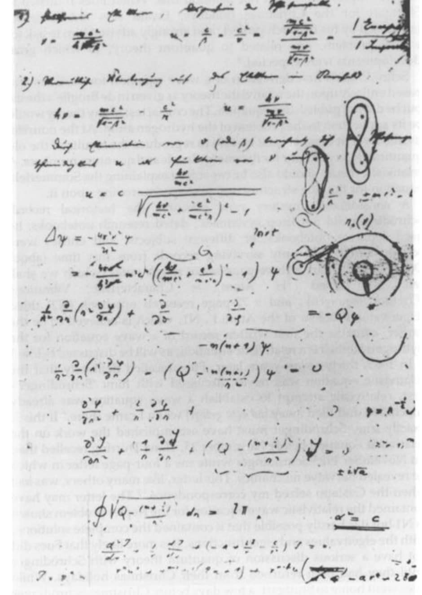
References
- Camille Jordan, Cours d’analyse de l’École polytechnique, 1887, Ed. 1, Vol. 3, pg. 242-244 https://archive.org/details/coursdanalysede08jordgoog/page/242/mode/2up
- https://en.wikipedia.org/wiki/Pochhammer_contour Jordan-Pochhammer contour
- https://arxiv.org/abs/1203.3602 Picture-hanging puzzles
- http://www.mathpuzzle.com/hangingpicture.htm Ed Pegg Jr., Picture hanging, 2002
- https://dlmf.nist.gov/13.4 Integral representation of the Kummer function
- https://zenodo.org/records/1428390 Pochhammer, L. (1890), Zur Theorie der Euler’schen Integrale, Mathematische Annalen, 35 (4), pg. 499
- https://laurentlessard.com/bookproofs/hanging-a-picture-frame/
- R. Courant, D. Hilbert, Methods of Mathematical Physics, Vol. 1, Interscience (Wiley) New York, 1962.